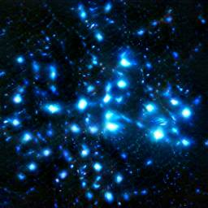
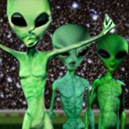
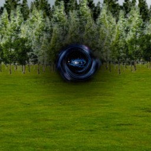

Welcome to tenarvia, and thank you for looking at our travel planning website. Here, we will try to ensure that Starlight City is the perfect destination for your trip.
Starlight city is a location set in space. A strange wormhole opened up in a desolate area of Tenarvia, and on the other side, explorers found a cosmic civilization in another galaxy, light years away from earth. The creatures who inhabited Starlight city had created a network of paths and tunnels between a cluster of stars, and survived by the solar energy they gave off.
 
The wormhole would appear once a year, in the same place, on the same date, the 24th of June. Because of this date, and the portal to a space civilization, Starlight city is believed to be linked to Matariki. The wormhole’s location is appropriately called “The gate to Starlight city” and is located on the coast near the Bavanahs. To this day, nobody knows how the wormhole appeared.

When visiting Starlight city, you may want to explore the attractions, foods and customs that the natives are quite familliar with. We will list a few examples of places to visit and things to try in 'PLACES'. If you have made up your mind and wish to go to Starlight city, feel free to click on the 'FLIGHTS' button. If you would like to know more or have a guide accompany you on your trip, contact some of our alien friends to help you out by clicking 'ASSISTANTS'. Have a wounderful journey!